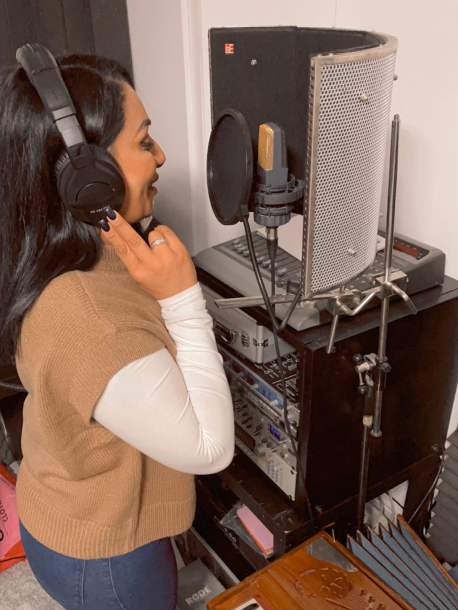
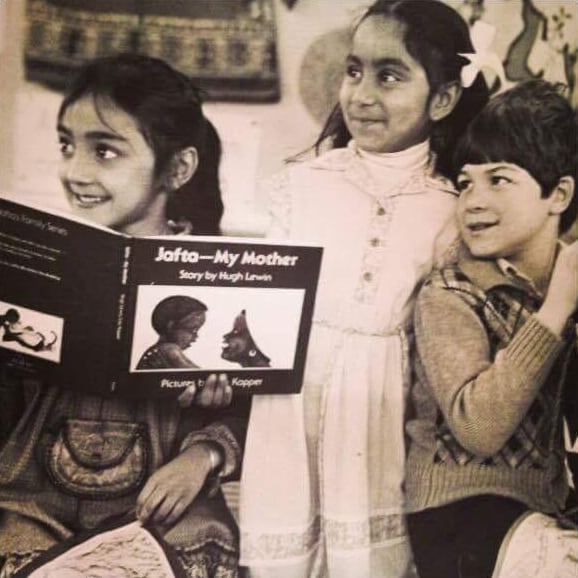
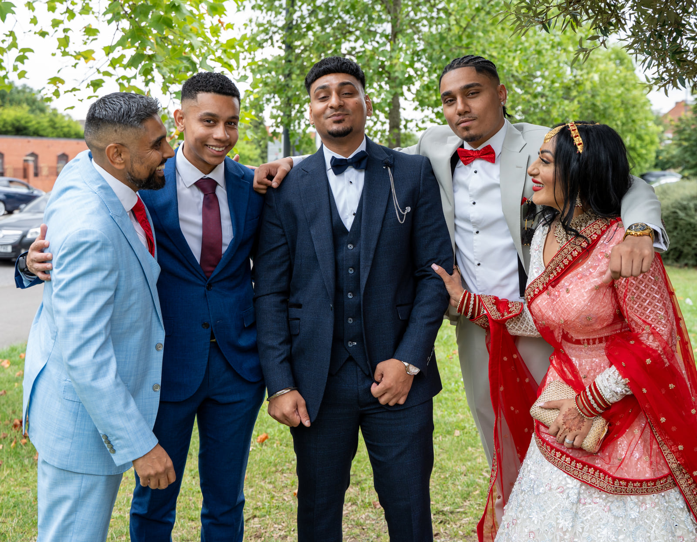
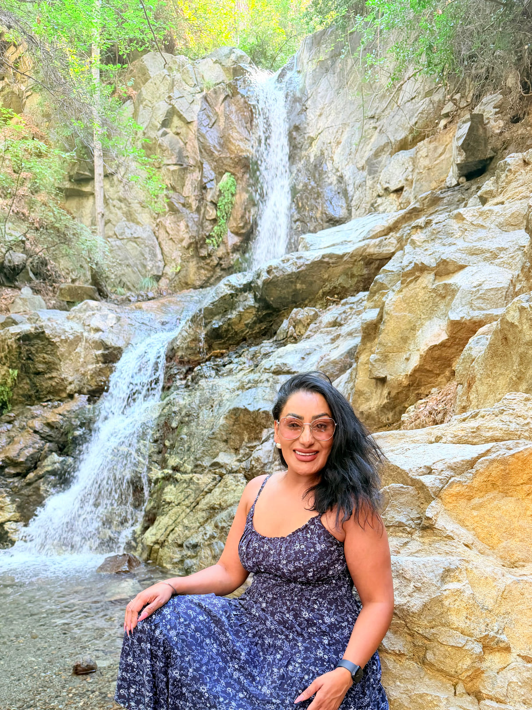

Founder, Punjabi Folk Entertainment Ltd
Reena Kaur Punjabi Folk Singer
More than 25 years of keeping Punjabi folk alive, still singing the songs she first learnt from her own family.
Reena Kaur is a Punjabi folk singer and dholki player, and the founder of Punjabi Folk Entertainment Ltd. Born in Scotland into a large Punjabi family, she has spent more than 25 years keeping Punjabi folk alive, performing at weddings, Sangeet ceremonies, concerts and cultural events across the UK and internationally.

At a glance
- Known for
- Ladies Sangeet and live Punjabi folk
- Sings and plays
- Punjabi folk vocals and the dholki
- On YouTube
- Her dholki videos, which have attracted a lot of views
- Performing
- More than 25 years
- Audiences
- From intimate gatherings of 50 guests to stages in front of 50,000 people
- Recordings
- Her own songs, released on the mainstream streaming platforms
- Television
- Appearances across mainstream channels
- Founder
- Punjabi Folk Entertainment Ltd
The rest of this page is Reena’s story, in her own words.
Music was woven into my childhood

I was born in Scotland into a wonderfully big Punjabi family, and when I say big, I mean big. I’m one of six siblings, with around 20 aunties and uncles, so family, noise, food, laughter and music were simply part of everyday life.
I learnt my first traditional songs from my grandmother and my nan. My other great musical influence was my grandad, a highly regarded dholki player, known for performing alongside well-known artists from India. Listening to him gave me an early feel for the rhythms that would, years later, become such a big part of my own life. Today I play the dholki as well as sing, and my dholki videos on YouTube have attracted a lot of views.
I didn’t know it then, but I was being handed something I would one day carry forward to another generation.
Where my voice began
Long before the concert stages, the recordings and the television appearances, the first time I sang in public was somewhere much more personal: the mandir. I sang bhajans, including devotional songs to Sai Baba, and I can still remember how proud my parents were to hear me.
Faith has stayed at the centre of who I am. I have a deep personal faith, and a genuine love and respect for other religions and beliefs. For me, faith is about love, gratitude, humanity and recognising something greater than ourselves.
I find it quite special that before anyone knew me as a performer, my voice was first heard in prayer.
Before the music took over
My working life began in a very different world. I left school with little formal education and started my career with Mary Kay Cosmetics, a big milestone for a young woman who was still finding her way.
From there I worked in some of the UK’s best-known premium department stores, with prestigious cosmetics brands, and built my own bridal hair and make-up business. It meant being part of some of the most important days in families’ lives.
But something else was beginning to grow.
From intimate gatherings of 50 guests to stages in front of 50,000 people
More than 25 years ago, I was spotted and given an opportunity that changed the direction of my life. My first ever concert was in front of more than 10,000 people. Talk about being thrown in at the deep end!
It opened up an entirely new world. I went on to perform professionally and to record and release my own music, which is on the mainstream streaming platforms. The stages got bigger, and one day I found myself singing to an audience of more than 50,000.
Standing there, I couldn’t help thinking about the journey from the young girl singing bhajans in the mandir to that stage.
Creating something of my own
Alongside my work as a singer, something else was developing, much closer to my roots. I started singing the traditional Punjabi folk songs I had grown up hearing from my family at weddings and celebrations.
This was long before social media became what it is today. There was no online blueprint to follow, and almost no online presence for the kind of traditional, interactive Punjabi entertainment I was starting to provide. I wasn’t following a business model. I was finding my way as I went.
People asked me to sing at their celebrations. Word spread, the demand grew, and eventually I began charging professionally. What had started so naturally became a flourishing business, and in time, Punjabi Folk Entertainment Ltd.
Since then I’ve had the privilege of performing for families across the UK and internationally, and of appearing across mainstream television channels and platforms. The industry around me has changed enormously, but the heart of what I do is still remarkably simple.
I am still sharing the music and traditions that were shared with me. Punjabi folk isn’t simply a genre I decided to perform. It’s part of my family history, and part of my story.
What people didn’t see
The journey here wasn’t easy. People see an established performer and a successful business. They don’t necessarily see the years of hard work and sacrifice behind it.
I became a mum for the first time at just 19, so I grew up very quickly. By my early twenties I was raising two young children, working, and trying to build something of my own at the same time. For part of that journey I was a single mum, still incredibly young myself, learning to navigate motherhood while trying to create a future for my family.
And I was building a business with no blueprint to follow. I genuinely started from scratch and learnt by doing. I made mistakes and learnt from them. I took chances, fell down, and found a way to get back up again. There were tears behind closed doors, and times I simply had to wipe them, pull myself together and carry on, because my children depended on me.
Those years taught me resilience, independence and determination. They taught me that success isn’t about everything going perfectly. It’s about getting back up when it doesn’t.
So when I look at what Punjabi Folk Entertainment has become, I don’t simply see a business. I see the years behind it, the mistakes that taught me and the sacrifices. I see my family, and the people who believed in me. And I see every version of myself that had to keep going to get here. Perhaps that’s why, after all these years, what I do still means so much to me.
Away from the stage
Of course, there is also a Reena without a microphone or a dholki! Today I’m a wife and an incredibly proud mum of three boys. Family has always been at the centre of my world, and coming from such a huge family myself, perhaps that was inevitable.

Music is never far away, although people are sometimes surprised to learn that I have a particular love for jazz. I’m passionate about food, too: cooking, fine dining, discovering beautiful restaurants and enjoying a good glass of wine. I love travelling, experiencing different cultures and spending time with the people closest to me.

And then there’s Christmas. Without question, my favourite time of the year. The decorations, the food, the cooking, the music, the atmosphere and having everyone together: I love absolutely everything about it.
A little piece of royal mail
One of my favourite memories goes all the way back to childhood, when I received a letter from the Queen. It was an incredibly exciting moment for me and an especially proud one for my parents, and it’s one of those little pieces of my story I will never forget.
Still evolving
I’ve worn quite a few hats: beauty professional, bridal make-up artist and hairstylist, recording artist, singer, entertainer, businesswoman, wife and, most importantly, mum. There have been extraordinary highs and difficult moments, mistakes, tears, laughter and an enormous amount of learning along the way.
More than 25 years on, I’m still passionate about preserving traditional Punjabi folk music and introducing it to another generation. When I think back to my grandad playing the dholki, my grandmother and nan teaching me the songs, and my parents proudly watching me sing bhajans in the mandir, and then look at where those beginnings took me, I feel incredibly grateful.
The stages have got bigger, the destinations further away and the journey much longer than I ever imagined. But underneath it all, I’m still Reena: a family girl who loves God, loves music, loves good food, loves a good laugh and, preferably, Christmas.

Book Reena and her team
Every Punjabi Folk Entertainment booking is led personally by Reena, and every line-up is drawn from her team of singers, dhol players and DJs.
- Ladies Sangeet singers →
- Punjabi folk singers for weddings and events →
- Entertainment for the whole wedding week →
- Concerts, melas and cultural events →
- Photos and videos of Reena performing →
- Meet the rest of the team →
Would you like Reena at your celebration?
Tell us the date, the venue and what you have in mind, and we will put together a bespoke quote.
Get a quote